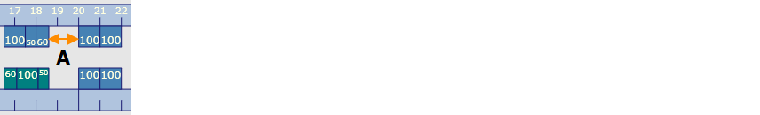

该对话框用于指定模具设置方案 模具的设置方案包含至少一个工位方案。每个工位方案中依次包含至少一个对折弯零件进行折弯的折弯工位。整个折弯过过程的所有的模具均定义在一个模具设置方案中。的自动计算标准。
- 最小距离
- 格栅
该选项设置多个工位 工位包括一个或多个上模和下模的区段。之间的最小距离(A) 。如果折弯 折弯是指配置文件编程要素并且指定工件形状的变化。可以被分配给折弯的一系列属性：边长，折弯角度，折弯半径（可选），初始折弯角度（可选），额外的属性（可选）。折弯可包括若干折弯过程。零件与另一折弯工位 折弯工位总是包括上部折弯模具和下部折弯模具，并且包含在一个工位方案中。发生碰撞，移动与零件发生碰撞的折弯工位的距离，直至不会发生碰撞为止。
Fig.: 在两个折弯工位之间的距离

该选项生成用于在工位方案 参见模具设置方案上定位折弯模具的格栅。定位始终是指折弯工位的左手位置。
NOTE: Hämmerle机床具有50mm的固定机械定位格栅。因此，这些机床的格栅间距数值必须始终除以50。